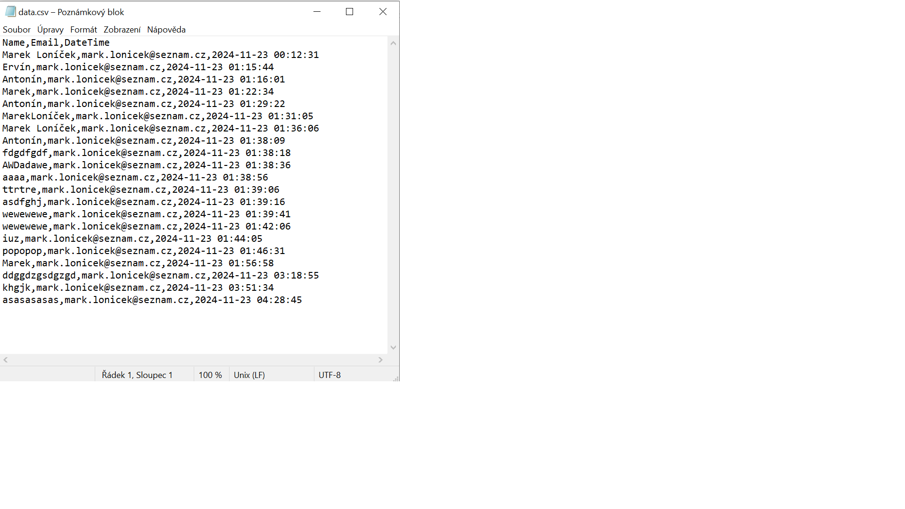
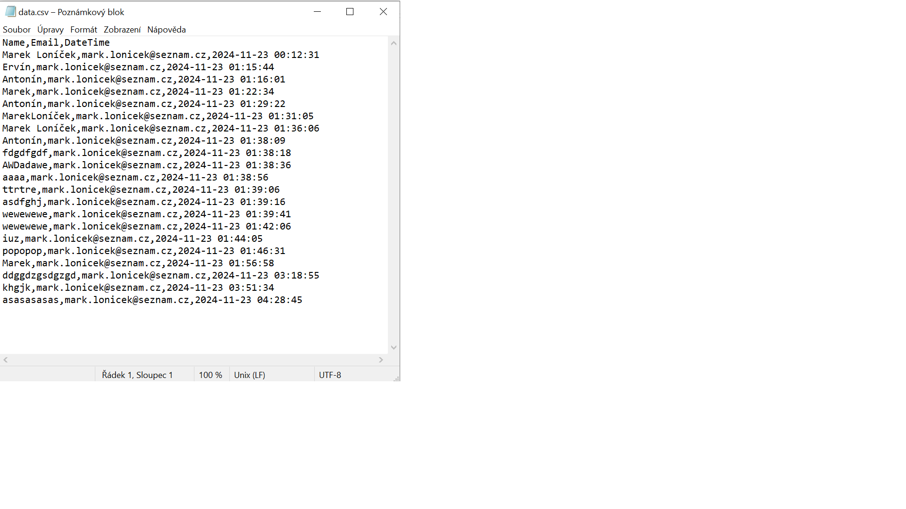

Dokumentace k projektu C# Micro Web Server
Vítejte!
Vytvořil jsem lehký mikro webový server v C#, který běží přímo z konzole. Je jednoduchý, efektivní a umožňuje okamžité testování a ukládání dat.
Obsah
1. Stažení
→ Klikněte na `Code` (zelené tlačítko) v pravém horním rohu repozitáře.
→ Vyberte `Download ZIP`. Rozbalte ZIP soubor na vašem počítači.

2. Instalace a nastavení
→ Rozbalte ZIP soubor na vašem počítači.
→ Najděte a spusťte spustitelný soubor `sitovka.exe` (potvrďte případná upozornění od firewallu).

3. Použití
→ Program se spustí v konzoli.
→ Vložte adresu serveru `http://localhost:8888` do Vašeho oblíbeného webového prohlížeče – Chrome, Edge, Firefox, Opera, Safari,...
→ Data se automaticky ukládají do přiložených souborů CSV a XML.

 


4. Licence
© Marek Loníček, 23.11.2024
Architektura systémového návrhu aplikace - UML diagramy
Tato dokumentace popisuje jednotlivé komponenty a diagramy používané v rámci C# konzolové aplikace pro mikro webový server.
1. Diagram použití (Use Case Diagram)
Diagram použití zobrazuje interakce mezi uživatelem a systémem. V našem případě to zahrnuje akce, které uživatel může provést, například otevření webového prohlížeče nebo uložení dat do CSV a XML souborů.
2. Diagram tříd (Class Diagram)
Diagram tříd ukazuje strukturu tříd, jejich atributy, metody a vztahy mezi nimi. V tomto diagramu jsou zobrazeny třídy jako `Program`, `HttpListener`, `File`, a jejich spolupráce při zpracování HTTP požadavků.
3. Sekvenční diagram (Sequence Diagram)
Sekvenční diagram ukazuje, jak probíhají interakce mezi objekty v systému podle časové posloupnosti. Příklad zahrnuje zpracování požadavků GET a POST, včetně načítání dat a generování odpovědi pro uživatele.
4. Aktivní diagram (Activity Diagram)
Aktivní diagram ukazuje kroky procesu, které se vykonávají v určité sekvenci. Zobrazuje například, jak systém reaguje na dotaz ohledně otevření prohlížeče nebo jak zpracovává různé požadavky na serveru.

5. Stavový diagram (State Diagram)
Stavový diagram ukazuje různé stavy objektu v aplikaci a přechody mezi těmito stavy. V případě serveru zobrazuje přechody mezi stavy jako "Nastaveno", "Zpracovává požadavky" a "Ukončeno".